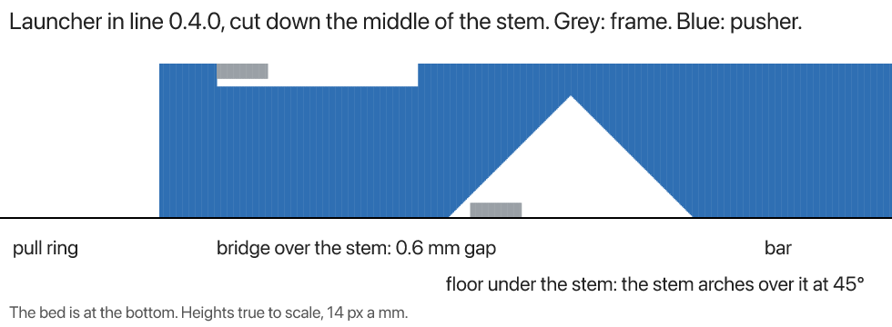

← rulecad archive
In-line launcher: a cut through the stem's bridge and floor
The in-line action cut lengthwise down the middle of its stem (y = 0), version 0.4.0. Grey is the frame, blue is the pusher (the ring, the stem and the bar), heights true to scale with the bed at the bottom.
- The bridge is the frame printed over the stem on the top six layers (10.96 to 12.16 mm). The stem is cut down to
10.36 mm along all of it that ever passes under, so a 0.6 mm gap (three layers) separates them. From above it looks joined, because the bridge runs straight over the stem.
- The floor is the frame on the bottom six layers (0 to 1.2 mm), on the bed. The stem's underside arches over it at
45°, 1.8 mm clear of it all along the stretch that passes over, up to 9.7 mm at its peak, so it prints with no support. It's on the underside, so a view from above can't show it.
A worry the model doesn't answer: a bridge's first layer sags as it's laid over air. Over a 0.6 mm gap it could reach the stem. A wider gap (five layers, 1.0 mm) would be safer.
